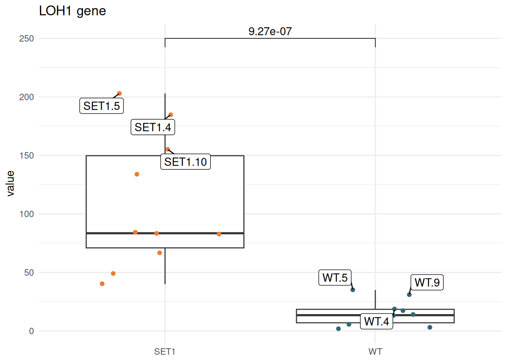
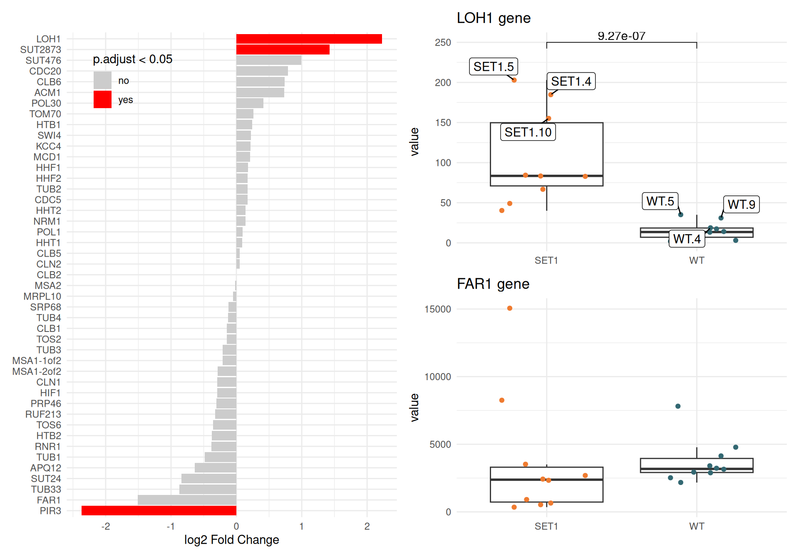

Learn to write custom functions to automate repetitive visualization tasks
Import Data
We will reuse the gene-level differential expression (DE) results (toy_DEanalysis.csv) introduced in session 4. These results were obtained by comparing SET1 samples against WT samples using the corresponding count data (read-counts.csv).
Import the DE results and save them as de_res.
Import the count data and save it as counts.
library(tidyverse)
── Attaching core tidyverse packages ──────────────────────── tidyverse 2.0.0 ──
✔ dplyr 1.1.4 ✔ readr 2.1.5
✔ forcats 1.0.0 ✔ stringr 1.5.1
✔ ggplot2 3.5.2 ✔ tibble 3.3.0
✔ lubridate 1.9.4 ✔ tidyr 1.3.1
✔ purrr 1.1.0
── Conflicts ────────────────────────────────────────── tidyverse_conflicts() ──
✖ dplyr::filter() masks stats::filter()
✖ dplyr::lag() masks stats::lag()
ℹ Use the conflicted package (<http://conflicted.r-lib.org/>) to force all conflicts to become errors
Rows: 45 Columns: 7
── Column specification ────────────────────────────────────────────────────────
Delimiter: ","
chr (1): gene_name
dbl (6): baseMean, log2FoldChange, lfcSE, stat, pvalue, padj
ℹ Use `spec()` to retrieve the full column specification for this data.
ℹ Specify the column types or set `show_col_types = FALSE` to quiet this message.
counts <-read_csv("../exos_data/read-counts.csv")
Rows: 45 Columns: 41
── Column specification ────────────────────────────────────────────────────────
Delimiter: ","
chr (1): Feature
dbl (40): WT.1, WT.2, WT.3, WT.4, WT.5, WT.6, WT.7, WT.8, WT.9, WT.10, SET1....
ℹ Use `spec()` to retrieve the full column specification for this data.
ℹ Specify the column types or set `show_col_types = FALSE` to quiet this message.
Visualisation
Set theme_minimal() as the default theme, and define a custom color palette for WT (“#336872”) and SET1 (“#EF7B30”).
Identify the most significantly up-regulated gene (i.e. the one with the lowest adjusted p-value). Create a boxplot of its expression counts across WT and SET1 samples, using:
geom_boxplot() and geom_points()
the custom group colors defined above
Store the resulting figure in an object named p.
# find the top up-regulated genefilter(de_res, log2FoldChange >0) |>arrange(padj)
# label the top 3 expressed sample in each groupdf_plot <- df_plot |>group_by(group) |>mutate(label =ifelse(rank(desc(value)) <=3, name, NA))# redo the figure with the updated data frame and add labelsp_label <-ggplot(df_plot, aes(x = group, y = value)) +geom_boxplot(outlier.shape =NA) +geom_point(aes(color = group),position =position_jitter(width =0.3, seed =8) ) +scale_color_manual(values = colors) +labs(x =NULL, title =paste(the_gene, "gene")) +theme(legend.position ="none") + ggrepel::geom_label_repel(aes(label = label),position =position_jitter(width =0.3, seed =8),min.segment.length =0 )p_label
Warning: Removed 14 rows containing missing values or values outside the scale range
(`geom_label_repel()`).
Based on the previous figure, add the adjusted p-value using stat_pvalue_manual() from the {ggpubr} package. (?stat_pvalue_manual)
Save the final plot as p_signif.
library(ggpubr)pvalue_df <-data.frame(group1 ="WT",group2 ="SET1",p.adj =signif(de_res$padj[de_res$gene_name == the_gene], digits =3), # The p-value you want to displayy.position =230# The y-coordinate where the annotation will be placed)p_signif <- p_label +stat_pvalue_manual(data = pvalue_df,y.position =250)p_signif
Warning: Removed 14 rows containing missing values or values outside the scale range
(`geom_label_repel()`).

Create a horizontal bar plot showing the log2 fold change for each gene, and highlight those with an adjusted p-value (padj) below 0.05.
Hints:
Add a column ranking genes by their log2 fold change.
Add a column indicating whether the gene meets the significance threshold.
Combine p_lfc, p_signif, and p2 into a single layout using {patchwork}. Place p_lfc on the left, and arrange the two boxplots on the right (one on top of the other) using the | or / operators.
library(patchwork)p_lfc | p_signif / p2
Warning: Removed 14 rows containing missing values or values outside the scale range
(`geom_label_repel()`).

Bonus Question
Explore the wrap_plots() function from {patchwork}. Try to:
Recreate the same figure arrangement as in the previous question, this time using the “design†argument.
Add panel labels (“A”, “B”, “C”) to the plots with the plot_annotation() function.